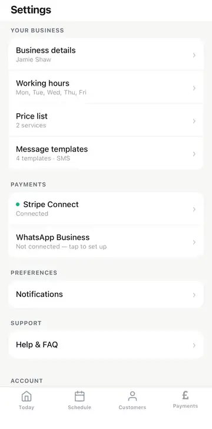
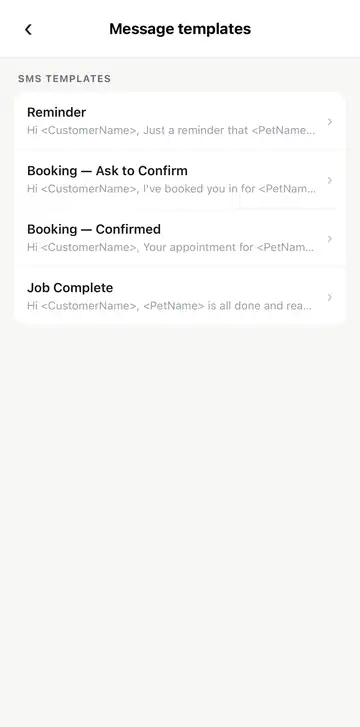
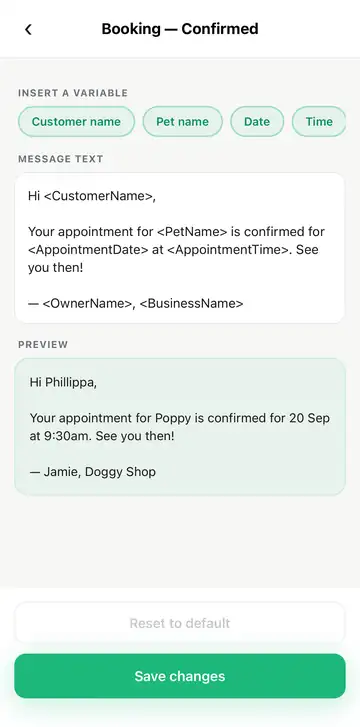

Message templates Optional
You don't need to do anything on this page for the test. It's just a look at one more feature: every text SoloWorks sends is written for you, and you can change the wording of any of them.
More about the text messages
The texts you received during the test aren't fixed. They come from a set of message templates that you own. There's one for each stage of a booking:
- Booking – Ask to Confirm: sent when you've booked a customer in and want them to confirm.
- Booking – Confirmed: the confirmation text you saw in the test.
- Reminder: a nudge ahead of the appointment.
- Job Complete: the “your pet is ready” message.
Each one fills in the details for you (the customer's name, the pet's name, the date and time and so on), so you write the wording once and it's right for every customer.
-
Find Message templates in Settings
Open Settings and tap Message templates, in the “Your business” section.

Settings → Message templates -
Look at your four templates
You'll see the list of SMS templates, each with the start of its message underneath. The bits in angle brackets, like <CustomerName>, are placeholders. The app swaps them for the real details when the text is sent.

Your four SMS templates -
Open one and make it yours
Tap any template to edit it. You can change the wording however you like, and add details by tapping one of the buttons under Insert a variable (customer name, pet name, date, time and so on).
The Preview underneath shows what your customer will actually see, using example details, so you can check it reads well before you save. Tap Save changes when you're happy, or Reset to default to go back to the original wording.

Editing “Booking – Confirmed”, with a live preview